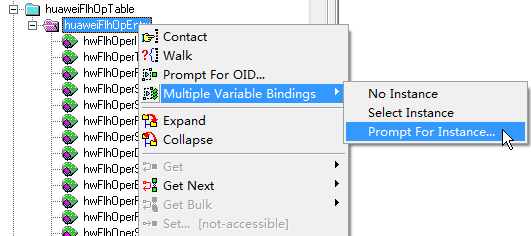
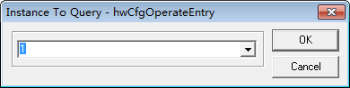
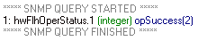
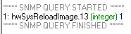
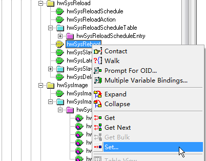
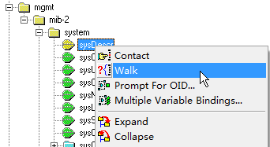

Upgrading a Device Through the MIB
Context
You can use the MIB to remotely upgrade a device.
Object |
OID |
MIB File |
|---|---|---|
huaweiFlhOpEntry |
1.3.6.1.4.1.2011.6.9.1.2.1.1 |
HUAWEI-FLASH-MAN-MIB |
hwSysImageName |
1.3.6.1.4.1.2011.5.25.19.1.4.2.1.2 |
HUAWEI-SYS-MAN-MIB |
hwSysReloadScheduleEntry |
1.3.6.1.4.1.2011.5.25.19.1.3.3.1 |
|
hwSysReboot |
1.3.6.1.4.1.2011.5.25.19.1.3.4 |
|
sysDescr |
1.3.6.1.2.1.1.1 |
SNMPv2-MIB |

This example uses the MIB Browser as the NMS software to illustrate the operations. If you use other NMS software, see the documentation of the specific software.
Prerequisites
Before using the MIB to upgrade a device, you have completed the following tasks:
- Configure the device to connect to the NMS through SNMP.
- Set parameters of the MIB Browser and connect the MIB Browser to the device.
- Compile related MIB files using the MIB Compiler and load the MIB files.
- Configure a file server to store the system software for upgrade and ensure that there are reachable routes between the device and the file server. In this example, an FTP server is used as the file server, and the system software has been stored in the working directory of the file server.
- Ensure that the device has sufficient storage space to store the system software. Otherwise, the upgrade will fail.
Procedure
Load the system software to the device.
You can use huaweiFlhOpEntry to load the system software. The operations are as follows:
- Search for huaweiFlhOpEntry. You can search for an object based on its location in the MIB tree. However, it is difficult to locate an object if a large number of MIB files are imported to the MIB Browser. In this case, you can press Ctrl+F to locate an object, as shown in Figure 1.
- Perform multiple variable bindings. Create a table instance first.Figure 2 Creating a table instance

- Specify an instance ID. Assume that the ID is set to 1. When specifying an instance ID, ensure that the instance ID is not used by other instances.Figure 3 Specifying a table instance ID

- Delete unnecessary sub-objects from the table and set the values of the remaining sub-objects. After the operations are complete, the operation interface shown in Figure 4 is displayed.
To delete or set a sub-object, right-click the sub-object and select an operation from the displayed shortcut menu.
- After setting the table instance, change the Get operation to the Set operation, and click Set to load the system software HUAWEIv600r023c00.cc.
Use hwFlhOperStatus to check the operating status. Right-click hwFlhOperStatus and select Walk from the shortcut menu, as shown in Figure 5.
If the result shown in

is displayed, the system software is successfully loaded.
Set the startup file.
After the system software is uploaded to the device, you need to specify the uploaded file as the next startup file. You can use hwSysReloadScheduleEntry of HUAWEI-SYS-MAN-MIB to complete the configuration. The operations are as follows:
- Search for hwSysReloadScheduleEntry. You can search for an object based on its location in the MIB tree or press Ctrl+F to search for the object.
Perform multiple variable bindings. Create a table instance, and specify the instance ID. On the operation interface, delete unnecessary objects and set the values of the remaining objects. The operations are similar to those of huaweiFlhOpEntry. After the operations are complete, the operation interface shown in Figure 6 is displayed.
In the preceding figure, the value of hwSysReloadImage is queried using hwSysImageName of hwSysImageTable. Right-click hwSysImageName and select Walk from the shortcut menu to query the indexes of different system software on the device, as shown in Figure 7.Figure 8 shows the query result.- After setting the table instance, change the Get operation to the Set operation.
- Click Set and use hwSysReloadImage to check the result. Right-click hwSysReloadImage and select Walk from the shortcut menu. If the result shown in

is displayed, the system software for next startup has been changed.
Restart the device.
Restart the device to make the startup file take effect. You can use hwSysReboot to restart the device and complete the upgrade.- Search for hwSysReboot. You can search for an object based on its location in the MIB tree or press Ctrl+F to search for the object.
- Enter the single object setting interface. hwSysReboot is a single object. Right-click the object and select Set from the shortcut menu.Figure 9 Entering the single object setting interface

- Set the restart range.In the dialog box that is displayed, set the restart range to rebootWholeRoute(2) (restarting all devices), as shown in Figure 10.
The numbers 1, 2, and 3 in the figure indicate the sequence in which operations are performed.
After the configurations are complete, click in the upper left corner of the dialog box to perform the restart operation.
- Verify the configuration. After the device is restarted, use sysDescr to view the device version and check whether the upgrade is successful.
- Search for sysDescr. You can search for an object based on its location in the MIB tree or press Ctrl+F to search for the object.
Right-click sysDescr and select Walk from the shortcut menu.
Figure 11 Querying the device version
If the result shown in Figure 12 is displayed, the upgrade is successful.